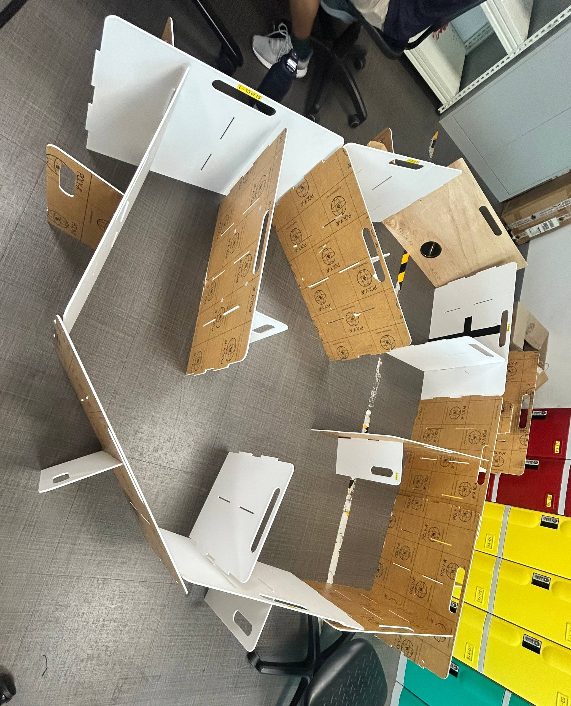
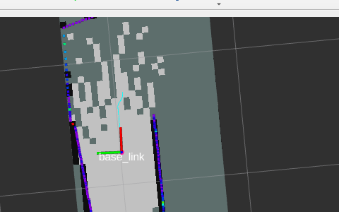
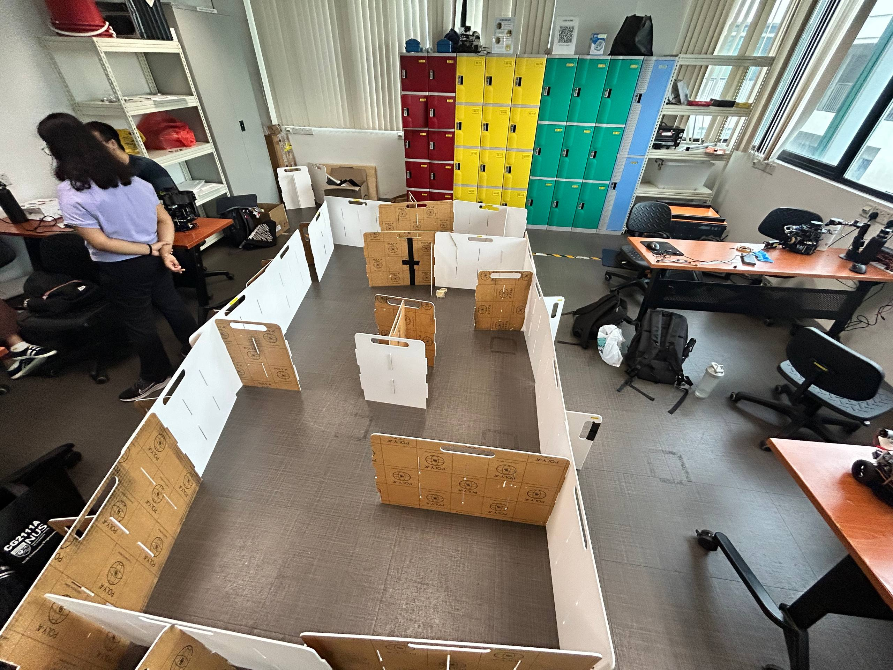
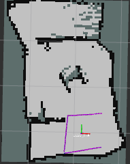

🔗 Navigation
- Home
- Requirements Specification
- Concept of Operations
- High Level Design
- Software Subsystem: Navigation and FSM
- Software Subsystem: ArUco Marker Detection
- Mechanical Subsystem
- Electrical Subsystem
- Interface Control Document
- Software and Firmware Development
- Testing Documentation
- User Manual
- Areas for Improvement
- Appendix
Testing Documentation
Navigation Testing Results (Physical Maze)
Test Environment: TurtleBot 3 Burger in physical maze
ROS 2 Distro: Humble
Test Date Range: 27/03 - 31/03/2026
Session S1 (27/03, 3:32 PM) – SLAM Dependency Issues
| Metric | Result |
|---|---|
| Outcome | Fail |
| Run Time | 0 min 0 s |
| Mapped Area | 0% |
| Collisions | 0 / 0 |
Configuration:
lookahead_distance:0.24 mspeed:0.18 m/sexpansion_size:3target_error:0.15 mrobot_r:0.2 m
Observations:
- SLAM Toolbox had QoS dependency issues; could run in Gazebo but not with robot bringup
- Bot did not move as no SLAM map was created
Evidence:

Changes for Next Session:
- Updated SLAM configuration in
/opt/ros/humble/share/slam_toolbox/config/mapper_params_online_async.yaml
Session S2 (27/03, 4:04 PM) – First Movement & Collision
| Metric | Result |
|---|---|
| Outcome | Partial |
| Run Time | 0 min 26 s |
| Mapped Area | ~5% |
| Collisions | 1 |
Configuration:
lookahead_distance:0.24 mspeed:0.18 m/sexpansion_size:3target_error:0.15 mrobot_r:0.2 m- Updated SLAM mapper parameters:
map_update_interval: 1.0,min_laser_range: 0.12,max_laser_range: 3.5,minimum_travel_distance: 0.2
Observations:
- Bot collided with wall after first turn
- Map generated but SLAM latency caused delayed obstacle awareness
- Robot did not avoid walls/obstacles effectively
Evidence:

- Video: Collision Incident S2
Changes for Next Session:
- Reduce speed from 0.18 m/s to 0.09 m/s to counteract SLAM latency and enable smoother maneuvering
Session S3 (31/03, 3:27 PM) – Speed Reduction & Success
| Metric | Result |
|---|---|
| Outcome | Success ✓ |
| Run Time | 0 min 53 s |
| Mapped Area | 100% |
| Collisions | 0 / 0 |
Configuration:
lookahead_distance:0.24 mspeed:0.09 m/s (reduced from 0.18)expansion_size:3target_error:0.15 mrobot_r:0.2 m
Procedure:
- Max speed reduced from 0.18 m/s to 0.09 m/s to accommodate SLAM processing latency
- Robot allowed to explore maze autonomously without intervention
Observations:
- Robot successfully navigated entire maze without collision
- Reduced speed (0.09 m/s) provided sufficient time for SLAM to update map before path planning decisions
- Smooth exploration pattern with effective frontier detection
- No oscillation or navigation errors observed
- Complete map coverage achieved in under 1 minute
- Robot correctly transitioned to completion state upon 100% map coverage
Evidence:

- Video: Run Video S3

Key Findings:
- Speed optimization is critical: Reducing speed from 0.18 m/s to 0.09 m/s eliminated collisions
- SLAM latency resolved: Slower movement rate allowed map updates to propagate before path planning
- Frontier algorithm effective: Algorithm successfully identified and navigated to unexplored regions
- Completion criteria met: 100% map coverage achieved with zero collisions in 53 seconds
5) Marker detection only
ros2 launch auto_explore global_controller_bringup.py use_sim_time:=true \
enable_fsm:=false enable_navigation:=false enable_markers:=true \
enable_pose_publisher:=true enable_docking:=false enable_shooter:=false
Check:
ros2 topic echo /aruco/debug
ros2 topic echo /tf
ros2 topic echo /marker_detected
Expected: the ArUco detection node should publish heartbeat/debug output on /aruco/debug, publish true on /marker_detected when a marker is visible, and publish marker pose transforms on /tf with frame names of the form aruco_marker_<id>.
ArUco Marker Detection Testing Results (Physical Robot)
Test Environment: TurtleBot 3 Burger with Raspberry Pi camera and printed ArUco marker
ROS 2 Distro: Humble
Test Date Range: 02/04/2026
Session A1 (02/04, 3:07 PM) – Heartbeat, Detection State, and Pose Publishing Validation
| Metric | Result |
|---|---|
| Outcome | Success ✓ |
| Run Time | 1 min 12 s |
| Marker IDs Detected | 1 |
| Detection State | true |
Configuration:
image_topic:/camera/image_rawcamera_info_topic:/camera/camera_infocamera_frame:camera_optical_framemarker_size_m:0.049 mdictionary:DICT_4X4_250- Marker placement distance: ~0.35 m to 0.60 m from camera
Procedure:
- Launched the ArUco pose streamer independently with marker detection enabled
- Checked
/aruco/debugto confirm heartbeat and debug JSON output - Checked
/marker_detectedto confirm marker visibility state - Checked
/tfto confirm pose transform publishing for the detected marker
Observations:
- The subsystem worked correctly on the first physical test run without requiring code changes
/aruco/debugpublished both heartbeat information and marker debug data as expected/marker_detectedcorrectly changed totruewhen the marker entered the camera view/tfpublished the marker pose using parent framecamera_optical_frameand child framearuco_marker_<id>- The published pose output was stable enough to be used directly by the downstream docking subsystem
Evidence:
- Setup Image: ArUco Detection Validation
- Screenshot: /marker_detected output
- Screenshot: /tf output
- Screenshot: /arUco/debug output
{kind=link}
{kind=link}
{kind=link}
{kind=link}
Key Findings:
- Heartbeat output worked correctly: the node continuously indicated that the subsystem was running
- Detection state publishing worked correctly: marker visibility was reflected reliably on
/marker_detected - Pose publishing worked correctly: TF transforms were published in the expected frame structure for downstream use
- Subsystem was ready for integration: marker output was immediately usable by the docking controller
6) Docking controller only
ros2 launch auto_explore global_controller_bringup.py use_sim_time:=true \
enable_fsm:=false enable_navigation:=false enable_markers:=false \
enable_docking:=true enable_shooter:=false
Check:
ros2 topic info /cmd_vel_docking
ros2 topic info /dock_done
ros2 topic echo /docking_state
Expected: docking topics are present, the controller is alive, and the docking state machine publishes valid transitions during a run.
Docking Testing Results (Physical Robot)
Test Environment: TurtleBot 3 Burger with camera-based ArUco docking target
ROS 2 Distro: Humble
Test Date Range: 04/04 - 08/04/2026
Session D1 (04/04, 5:10 PM) – Initial Path-Based Docking Attempt
| Metric | Result |
|---|---|
| Outcome | Fail |
| Run Time | 0 min 18 s |
| Dock Complete | No |
| Marker Lock | Intermittent |
Configuration:
lookahead_distance:0.24 mcruise_speed:0.12 m/starget_error:0.10 mrobot_safety_radius:0.20 mfinal_align_trigger_margin:0.50 mmax_path_ang_speed:0.70 rad/smax_final_ang_speed:0.15 rad/s- Marker set tested:
0, 10, 21, 30, 31, 32
Procedure:
- Ran the earlier docking controller version that combined A* planning, B-spline smoothing, path following, search rotation, and TF-based final alignment
- Tested on the physical robot with real
/tf,/odom,/scan, and/mapinputs
Observations:
- Controller logic performed correctly in Gazebo but was not reliable on the real robot
- In physical testing, the robot either remained stationary or just rotated side to side during docking attempts
- Marker-triggered phase transitions occurred, but the global behaviour was not stable enough for successful docking
- This suggested a gap between simulated frame assumptions and real-world robot behaviour
Evidence:
- Video: Physical Docking Failure D1
Changes for Next Session:
- Replaced the path-heavy docking approach with a simpler state-based controller using direct pose feedback from ArUco and a LiDAR verification check in the final approach stage
Session D2 (06/04, 4:42 PM) – Pose-Based Docking Controller Success
| Metric | Result |
|---|---|
| Outcome | Success ✓ |
| Run Time | 0 min 21 s |
| Dock Complete | Yes |
| Marker Lock | Stable |
Configuration:
forward_speed:0.08 m/sturn_kp:1.8max_ang_speed:0.25 rad/sturn_tolerance:2.0 degmid_tz_threshold:0.30 mfinal_tz_threshold:0.10 mtx_align_tolerance:0.01 mtx_final_align_tolerance:0.05 m- Added docking fail-safes:
marker_invisible_timeout_sec: 30.0,state_timeout_sec: 45.0
Procedure:
- Re-tested using the revised docking controller based on a staged state machine:
SEARCH -> APPROACH_1 -> TURN_SIDE / DRIVE_SIDE -> TURN_FACE_MARKER -> FINAL_APPROACH -> DONE - Used ArUco pose data for alignment and LiDAR as a final safety confirmation near the docking threshold
Observations:
- Robot successfully rotated to face the marker, approached it, corrected its heading, and completed final docking
- State transitions were consistent and easier to debug than in the earlier controller version
- The simplified approach reduced incorrect path behaviour seen in D1
- LiDAR provided a useful final cross-check before declaring docking complete
/dock_donepublished the expected completion signal at the end of the sequence
Evidence:
- Video: Docking Run Video 1 D2
- Video: Docking Run Video 2 D2
Key Findings:
- Simpler control logic was more robust: direct pose-based alignment outperformed the earlier planner-heavy implementation on hardware
- State-machine visibility improved debugging: the explicit docking states made it easier to identify where errors occurred
- Final sensing redundancy helped: LiDAR confirmation reduced the chance of false completion near the target
- Physical docking criteria were met: the robot completed docking reliably within the acceptable stopping distance
7) Shooter controller only
Simulation-safe launch:
ros2 launch auto_explore global_controller_bringup.py use_sim_time:=true \
enable_fsm:=false enable_navigation:=false enable_markers:=false \
enable_docking:=false enable_shooter:=true shooter_enable_hardware:=false
Trigger shooter modes:
ros2 topic pub --once /shoot_type std_msgs/String "data: static"
ros2 topic pub --once /shoot_type std_msgs/String "data: dynamic"
Expected: shooter starts without GPIO access errors.
Integration Tests
Navigation + Mission Control
Test Status: In progress (pending S3 results)
Test Objective: Verify frontier-based exploration integrates correctly with FSM state machine.
Procedure:
ros2 launch auto_explore global_controller_bringup.py use_sim_time:=false \
enable_fsm:=true enable_navigation:=true enable_markers:=false \
enable_docking:=false enable_shooter:=false
Evidence Placeholder:
- Video: FSM State Transitions

Marker Detection + Mission Control
Test Objective: Verify that FSM-controlled mission flow can transition into marker-aware behavior once a marker becomes visible.
Procedure:
ros2 launch auto_explore global_controller_bringup.py use_sim_time:=false \
enable_fsm:=true enable_navigation:=false enable_markers:=true \
enable_pose_publisher:=true enable_docking:=false enable_shooter:=false
Expected Behavior:
- FSM remains alive while marker topics are active
- Marker detection continues publishing independently of navigation
- Visible marker data is available for downstream docking logic
Evidence Placeholder:
- Video: FSM + Marker Detection
Full Bringup with Toggles Enabled
Test Objective: Verify that navigation, FSM, marker detection, and docking interfaces can coexist without launch conflicts.
Procedure:
ros2 launch auto_explore global_bringup.py \
use_sim_time:=false enable_slam:=false enable_rviz:=false \
enable_fsm:=true enable_navigation:=true enable_markers:=true \
enable_pose_publisher:=true enable_docking:=true enable_shooter:=false
Expected Behavior:
- All required nodes launch without runtime exceptions
- Core topics remain available simultaneously
- Marker and docking interfaces do not break navigation bringup
Evidence Placeholder:
- Screenshot:
ros2 node list - Screenshot:
ros2 topic list
End-to-End Mission Tests
Full smoke test (simulation)
ros2 launch auto_explore global_bringup.py \
use_sim_time:=true enable_slam:=true enable_rviz:=false \
enable_fsm:=true enable_navigation:=true enable_markers:=true \
enable_pose_publisher:=true enable_docking:=false enable_shooter:=false
Check:
ros2 topic list | grep -E '^/states$|^/aruco/debug$|^/cmd_vel$|^/map$|^/odom$'
Expected: critical topics are present and active.
Full stack test (real robot)
Run robot bringup and launch integrated mission stack with real-time settings and hardware flags.
Acceptance Criteria
- Required topics appear.
- Nodes launch without runtime exceptions.
- Mission states transition as expected.
Navigation Subsystem Summary
Subsystem Owner: Navigation / Autonomous Exploration
Test Period: 27/03/2026 – 31/03/2026
Physical Environment: Maze with walls and tight passages
Test Results Summary
| Session | Date | Outcome | Key Issue | Speed | Mapped % | Collisions |
|---|---|---|---|---|---|---|
| S1 | 27/03 | Fail | SLAM config error | 0.18 | 0% | 0 |
| S2 | 27/03 | Partial | Wall collision | 0.18 | 5% | 1 |
| S3 | 31/03 | Success | Speed optimization | 0.09 | 100% | 0 |
Key Learnings
- SLAM Latency: Critical factor affecting real-time obstacle avoidance
- Speed Sensitivity: Higher speeds (0.18 m/s) exceeded SLAM update rate; slower speeds (0.09 m/s) recommended
- Mapper Parameters: Fine-tuning
map_update_interval,minimum_travel_distance, and laser range bounds essential for responsiveness - Frontier Algorithm: Core algorithm functional; primary issue is external timing constraints rather than algorithmic failure
Recommendations
- S3 parameters (speed: 0.09 m/s) are recommended for operational deployment
- Current configuration successfully meets acceptance criteria: 100% map coverage with 0 collisions
- Further optimization may focus on reducing exploration time without sacrificing safety
- Consider implementing dynamic speed scaling based on map confidence for future enhancements
ArUco Marker Detection Subsystem Summary
Subsystem Owner: Perception / Marker Detection
Test Period: 02/04/2026
Physical Environment: Indoor bench and floor-level marker visibility tests
Test Results Summary
| Session | Date | Outcome | Key Issue | TF Output | Detection State |
|---|---|---|---|---|---|
| A1 | 02/04 | Success | First-run validation | Published | true |
Key Learnings
- Heartbeat output was verified: the subsystem continuously indicated that the node was running
- Marker visibility publishing was correct:
/marker_detectedreflected marker presence correctly - Pose publishing was successful: TF transforms were published correctly for the visible marker
- Subsystem worked first shot: no code changes were required before integration with docking
Recommendations
- Keep the same camera topic and marker size configuration for integration testing
- Record topic screenshots for
/aruco/debug,/tf, and/marker_detectedduring demonstrations - Maintain a clear frontal view of the marker for best pose stability
Docking Subsystem Summary
Subsystem Owner: Docking / Final Alignment Control
Test Period: 04/04/2026 – 08/04/2026
Physical Environment: Indoor floor docking tests using ArUco-based visual docking target
Test Results Summary
| Session | Date | Outcome | Key Issue | Dock Complete | Notes |
|---|---|---|---|---|---|
| D1 | 04/04 | Fail | Planner-heavy controller unstable on hardware | No | Worked in Gazebo, not on robot |
| D2 | 06/04 | Success | Simplified control logic | Yes | Full docking completed |
Key Learnings
- Hardware realism matters: a controller that appears correct in Gazebo may still fail on the physical platform
- Simpler docking logic was more effective: direct pose-based control using ArUco measurements was more reliable than the earlier path-planning approach
- State-machine structure improved reliability: explicit state transitions made debugging, testing, and recovery much easier
- Sensor redundancy improved confidence: ArUco pose guidance combined with LiDAR confirmation produced a more dependable final approach
Recommendations
- Use the revised pose-based controller as the baseline docking implementation
- Keep the successful D2 parameter set for demonstrations and integration testing
- Preserve watchdog-based abort logic in all future docking revisions
- During demonstrations, record both the robot motion and topic output for stronger validation evidence
Known Test Gaps
- Long-duration exploration runs (>5 min) not yet validated
- Integration with full mission FSM (marker detection + docking) pending
- Hardware-specific validation remains dependent on available robot access
Evidence and Results
- Suggested evidence artifacts:
- topic snapshots (
ros2 topic list,ros2 topic hz) - node lists (
ros2 node list) - launch logs from
~/.ros/log/ - RViz screenshots or short run recordings
- topic snapshots (
Testing Documentation: Electrical Subsystem
Test Strategy
- Unit Validation: Confirm individual component functionality (Servos, Ultrasonic) before full integration.
- Signal Integrity: Verify logic level compatibility between the Raspberry Pi and actuators.
- Power Reliability: Ensure the power distribution network handles currents without system brownouts.
- Mission Endurance: Validate the 25-minute operational requirement under real-world conditions.
Subsystem Unit Tests
1) MG90S PWM Logic Level Test
Objective: Verify MG90S response to different control voltages.
Procedure: Initially connected MG90S directly to RPi GPIO 13. Following failure, integrated BOB-11978 Level Shifter. Verified signal using a Digital Multimeter.
Observations:
- At 3.3V PWM: The servo remained still and failed to actuate.
- At 5.0V PWM (via BOB-11978): Servo responded correctly to PWM commands.
Result: ✅ Success (Requires Level Shifter)
2) HC-SR04 Voltage Divider Safety
Objective: Protect RPi GPIO from 5V Echo signals.
Procedure: Implemented 1kΩ-2kΩ voltage divider. Measured output voltage with a Digital Multimeter during active ranging.
- Expected: Signal stepped down to ~3.3V.
- Actual: ~3.33V measured at GPIO 24.
Result: ✅ Success
3) Startup Stability Test
Objective: Ensure “No unintended actuation of servos or drive motors on startup” (Req 2.4).
Procedure: Monitored SG90 and MG90S positions during OpenCR and RPi boot cycles.
Observations: Both servos successfully initialized to stop/closed pulse widths without jitter or movement before commands were issued.
Result: ✅ Success
4) Full Endurance Run (Physical)
Test Environment: NUS IDP Studio 2
Test Date: 13/04/2026 – 16/04/2026
Robot State: Integrated launcher mechanism and navigation stack active.
| Metric | Target | Result |
|---|---|---|
| Outcome | Success | Mission Completed |
| Run Time | 25 min 0 s | 25 min 0 s |
| Battery Voltage | >11 V | >11 V (Alarm stayed silent) |
Observations:
- Robot completed the full duration without triggering the OpenCR low-voltage alarm (threshold: 11V).
- Confirmed battery capacity remains sufficient for the 25-minute requirement, consistent with the predicted worst-case runtime of 54.9 minutes.
- No system brownouts or reboots occurred during concurrent movement and servo actuation
Spring-loaded Launcher Subsystem Summary
Subsystem Owner: Mechanical / Launcher Integration
Test Period: Iterative design versions v1-v4, followed by final validation
Physical Environment: Bench and integrated robot launcher tests
Technical Performance Measures (TPM)
| TPM | Requirement | Result |
|---|---|---|
| TPM1 | Launch vertical range equal to or further than the set docking tolerance of 15 cm | Met in final validation |
| TPM2 | Vertical drop-off within the height difference of the launch point and the receptacle | Met in final validation |
| TPM3 | Timing sequence success rate for sequential ball launches | Met in final validation |
Measures of Effectiveness (MOE)
| MOE | Requirement | Result |
|---|---|---|
| MOE1 | All launches deliver balls successfully into the respective delivery receptacle following the correct timing sequence | Met in final validation |
| MOE2 | Zero mechanical jams during runs | Met in final validation |
Test Results Summary
| Version | Key Issue | Fix Applied | Outcome |
|---|---|---|---|
| V1 | Rack and pinion tolerance too tight; pusher taller than required | Cut wall to fit pinion; reduced pusher height | Partial |
| V2 | Wiring and servo integration not serviceable; launcher difficult to service; pusher oversized; rack interference near pinion wall | Added wire holes and servo gate mount; made launcher detachable from hex mounts; reduced pusher size and height; removed wall for pinion fit | Improvement |
| V3 | Ball did not drop nicely into launcher; wall friction reduced launch distance; rack needed more pullback; gear slipping under load | Moved stop further up and increased gear teeth; removed launcher walls and sanded walls; increased gear teeth; reduced gear distance by lowering servo height | Improvement |
| V4 | Ball could fall out laterally; launcher flexed under load; servo screw fit loose; residual gear distance issue; launch angle insufficient | Added side wall; increased wall thickness; reduced servo screw hole diameter; reduced gear distance more; moved bottom hex mount hole lower to tilt launcher; added servo cover | Success |
Key Learnings
- Geometry and tolerance were critical: the launcher required multiple iterations before the rack, pinion, and pusher aligned smoothly.
- Launch reliability improved with mechanical refinement: increasing gear teeth, reducing flex, and tuning the launcher angle improved shot consistency.
- Retention features were necessary: the side wall, hot glue stops, and masking tape gates prevented ball rollback and launch jams.
- Final validation met the target measures: the final build satisfied the TPM and MOE targets from the launcher test plan.
Recommendations
- Retain the final V4 geometry as the baseline launcher design.
- Replace any suspect logic level shifting or servo interface hardware before future runs if timing drift reappears.
- Keep the side wall, servo cover, and tilt adjustment features for future iterations.
- Re-run TPM and MOE checks after any launcher or servo hardware change.